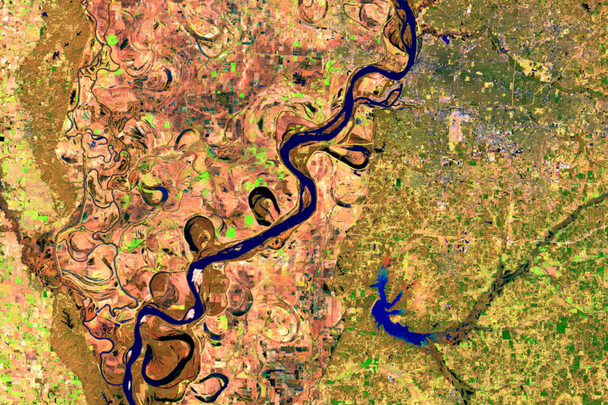
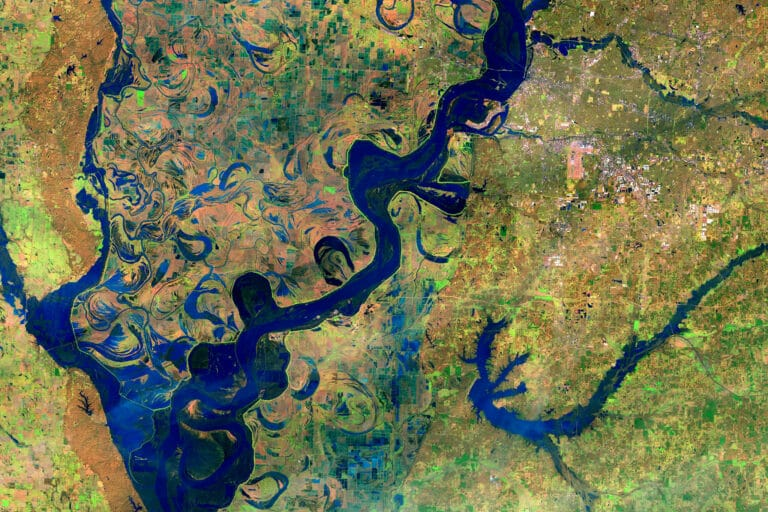

Send In Your Before-and-After Climate Change Photos


Flooding along Mississippi River, Feb. 27, 2014 – Feb. 25, 2019. Source: NASA’s Earth Observatory. Images taken by the Operational Land Imager on Landsat 8. These false-color images compare a portion of the Mississippi River near Memphis, Tennessee, during typical winter conditions in 2014 with a similar time of year in 2019, when the river was swollen following intense rain. Soon after, the National Weather Service reported major flooding of the Mississippi north and south of this area, and of the Ohio River at Cairo, Illinois, where it flows into the Mississippi. Read more at NASA’s Earth Observatory.
Goaloop Climate Report Team
Lori Terrizzi
Founder
Lori Terrizzi is the CEO/Founder of Goaloop, founding client of the Yale Law School Entrepreneurship & Innovation Clinic. A graduate of Columbia University’s Film (continue)
Wilson Lui
Data Scientist
Wilson Lui received his M.S. in Data Science from Columbia University’s School of Engineering and Applied Science, where he studied natural language processing (continue)
Dr. Romanou
NASA Scientist
Dr. Anastasia Romanou is a Research Physical Scientist at the NASA Goddard Institute for Space Studies and an adjunct professor in Applied Physics and Applied (continue)
Goaloop®
The Goal Market®
Goaloop® is the world’s Goal Market®, the one-stop solution for goal achievement. Got a goal? Goaloop it! Like YouTube is for videos, Goaloop is for goals. State your (continue)
Receive the Goaloop Climate Report (GCR) Monthly
Be the first to receive the GCR Media Kit each month
Goaloop Climate Reports
The Goaloop Climate Report (GCR) shows the changes in three critical climate metrics, using data collected by the NASA Goddard Institute for Space Studies (GISS), the National Oceanic and Atmospheric Administration (NOAA), and the National Snow and Ice Data Center (NSIDC):
- Global Average Temperature Anomaly
- Atmospheric CO2
- Arctic Sea Ice Extent
Receive the Goaloop Climate Report each month.
The GCR evolved from a goal that was set on Goaloop.com on January 22, 2017, active at: goaloop.com/goaloop/climate